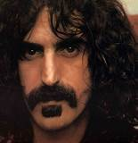

Jerome John Garcia
(August 1, 1942 - August 9, 1995) was anAmerican musician known for being the principal songwriter, lead guitarist, and a vocalist with the rock band Grateful Dead, which he co-founded and which came to prominence during the counterculture of the 1960s.
Tina Turner
(born Anna Mae Bullock; November 26, 1939 - May 24, 2023) was a singer, songwriter and actress. Known as the "Queen of Rock 'n' Roll", she rose to prominence as the lead singer of the husband-wife duo Ike & Tina Turner before launching a successful career as a solo performer.

Frank Vincent Zappa
(December 21, 1940 - December 4, 1993) was an American musician, composer, and bandleader. His work is characterized by nonconformity, free-form improvisation, sound experimentation, musical virtuosity and satire of American culture.
Dolores Mary Eileen O'Riordan
(6 September 1971 - 15 January 2018) was an Irish singer, musician and songwriter. She was the lead vocalist and lyricist of alternative rock band the Cranberries.
Gwen Renée Stefani
American singer and songwriter. She is a co-founder, lead vocalist, and the primary songwriter of the band No Doubt, whose singles include "Just a Girl", "Spiderwebs", and "Don't Speak", from their 1995 breakthrough studio album Tragic Kingdom.

Elvis Aaron Presley
(January 8, 1935 - August 16, 1977), commonly referred by his first name, was an American singer and actor. Known as the "King of Rock and Roll", he is regarded as one of the most significant cultural figures of the 20th century.
need to adjust width of pins - 6 minutes
put in the correct text - 5 minutes
figure out why 3rd pin isn't showing a photo - 7-15 minutes
Noticed that the cards container is only as 'tall as the pins, need to fix that - 3-4 minutes
put in the media query as shown in the example video
fixed the width of the cards to 175px, which is a good size for the photos and text. - 5 minutes
put in the correct provide text: 2 minutes
adjusted the height of my container to be 100vh so it could take up the veiwport, it initially was growing as I kept adding content to it 2-3 minutes
adjusted the grid row for the main section to be 2/9, which allows it to take up the full height of the container. - 3-4 minutes to figure out
adjusted the color from an antiquewhite to a lighter "antiquewhite to match the colours of the cards as mush as I could
all the durations for each 'fix' are estimates, the felt short but the time ranout faster than I thought it would, so the were definetely longer